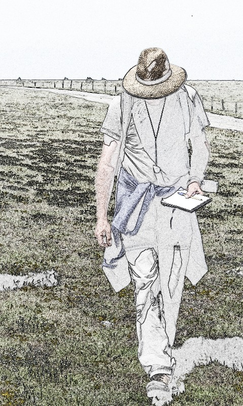

Tela Botanica


- 14 ans d'expérience dans la coopération
- 23 500 membres : amateurs, professionnels, scientifiques...
- 50% de débutants
Collecte
Relevés de terrain (observations, images) & identification.


Saisie

www.tela-botanica.org

Nommer, géolocaliser, illustrer son observation de terrain
⇨ I. Intérêt personnel fort, puis...
Partage

Partage avec le collectif
⇨ II. Premier pas vers la coopération : apporter sa pierre à l'édifice


⇨ III. Se connaître, échanger...
Visualisation
Validation